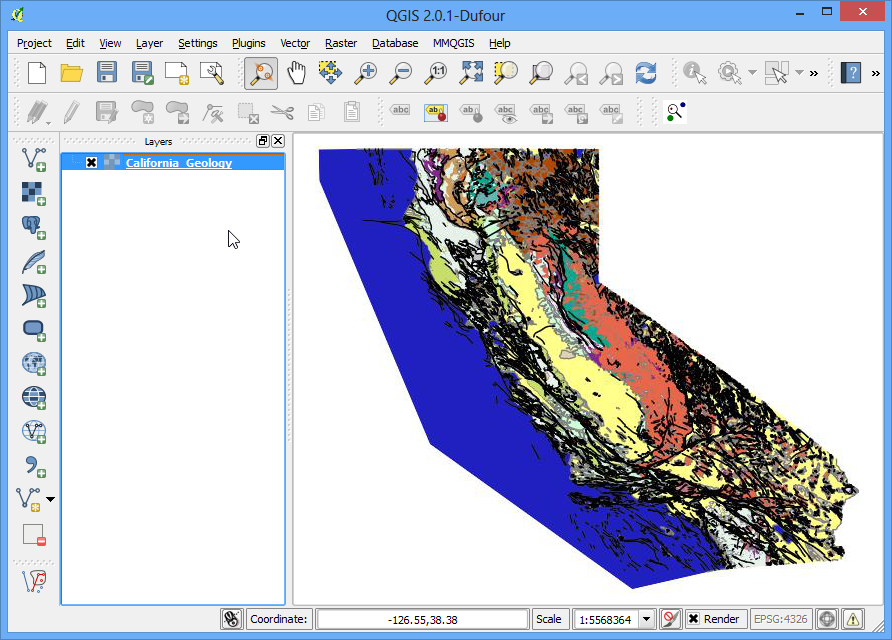

Робота з даними WMS
Часто вам потрібні допоміжні шари еталонних даних для вашої базової карти або зобразити ваш результат у контексті інших даних. Багато організацій публікують набори даних в інтернеті, які можна легко використати в ГІС. Популярним стандартом публікування мап в інтернеті є стандарт, який називається WMS (Web Map Service). Це найкращий вибір для використання еталонних шарів, оскільки ви отримуєте доступ до багатих наборів даних у вашій ГІС системі без клопоту завантаження і стилізації даних.
Огляд завдання
В цьому уроці, ми завантажимо шари мапи мінеральних ресурсів - Mineral Resources, що була опублікована USGS.
Джерело даних: [MRDATA]
Виконання
Відкрийте QGIS і перейдіть у меню .

На вкладці Шари, натисніть кнопку Новий.

Дайте назву вашому з’єднанню. Це не є назвою шару, а є назвою сервісу до якого звертається шар із даними WMS. Один сервіс може зазвичай пропонує декілька шарів, які можна додати в ваш проект. Адреса URL, за якою необхідно звернутися до WMS шару називається GetCapabilities. При доступі до серверу WMS із цим параметром в полі адреси URL, він поверне сам список доступних шарів із різними метаданими. В такому випадку, назвіть таке з’єднання як MRDATA USGS, а в якості адреси GetCapabilities задайте http://mrdata.usgs.gov/services/ca?request=getcapabilities&service=WMS&version=1.1.1&. Натисніть OK.

Далі, натисніть кнопку Connect для отримання списку доступних шарів. Ви помітите різні ідентифікатори ID вказані для кожного шару. ID 0 означає, що ви отримаєте мапу з усіма шарами. Якщо вам не потрібні усі шари, ви можете розгорнути список натиснувши іконку + і вибрати шар, який вас цікавить. Виберіть шар 0 для даного уроку.

У групі Image encoding, вам необхідно вибрати формат зображення. Формат зображення має велике значення, і ваш вибір залежить від вашої конкретної задачі використання. Ось деякі поради:
Якість: PNG це формат стиснення даних без втрат. JPEG формат стиснення із втратами. TIFF може бути різним. Це означає, що якість зображення PNG буде кращою за JPEG. Якщо ви маєте намір друкувати мапу, використовуйте формат PNG.
Швидкість: Оскільки зображення PNG не мають стиснення і таким чином і розмір шару буде більшим, і для їх завантаження потрібно більше часу. Якщо ви використовуєте цей шар в проекті як еталон і вам необхідно часто користуватися збільшенням і прокруткою, використовуйте JPEG.
Підтримка клієнта: QGIS підтримує більшість із існуючих форматів, але якщо ви розробляєте веб застосування, браузери зазвичай не підтримують формат TIFF, тому вам варто вибрати інший формат.
Тип даних: якщо ваші шари в основному є векторними, PNG дозволить вам отримати кращий результат. Для шарів, що представляють собою зображення, зазвичай кращим вибором буде JPEG.
Для цього уроку, виберіть JPEG в якості формату. Змініть назву шару в полі Layer name, якщо бажаєте і натисніть кнопку Додати.

Ви побачите шар, що завантажено в QGIS. Ви можете збільшувати/прокручувати його як і будь-який інший шар. Сервіс WMS працює так, що кожен раз як ви збільшуєте/прокручуєте, застосування посилає координати вашої області видимості на сервер і сервер створює зображення для даної області і повертає до клієнту. Тому буде деяка затримка перш ніж ви побачите зображення для даної області після того як ви здійснили збільшення. Також, оскільки дані які ви бачите є зображенням, ви не можете запросити атрибути як для звичайного векторного/растрового шару.

Однак, ви можете бачити метадані про цей шар. Натисніть правою кнопкою миші на шар і виберіть Properties.

Ви помітите що діалогове вікно Properties виглядає інакше і має менше вкладок. Ви можете перейти до вкладки Metadata і дізнатися більше про сервіс WMS і його шари.